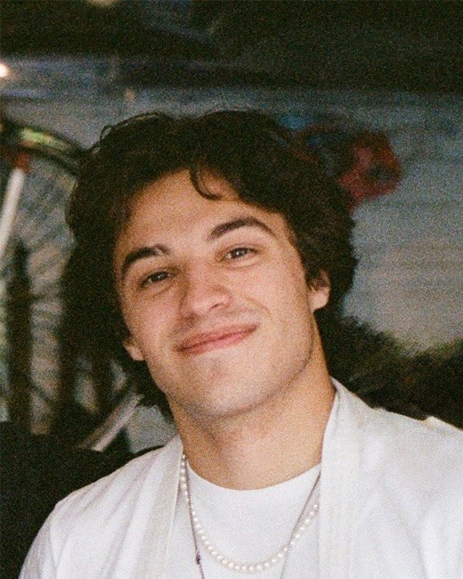
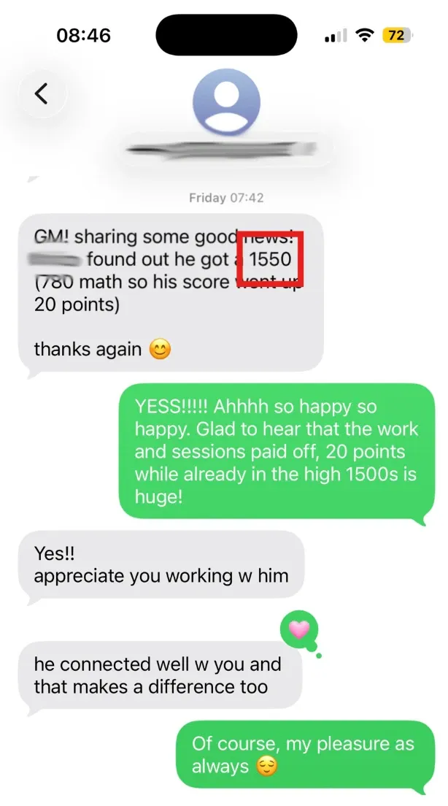
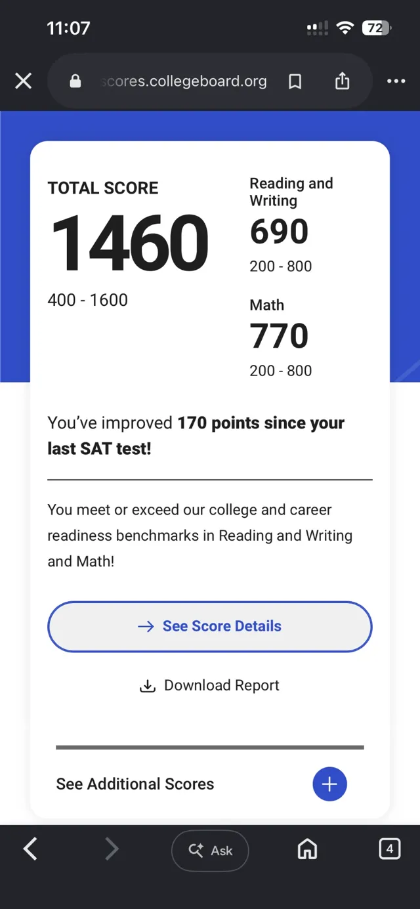
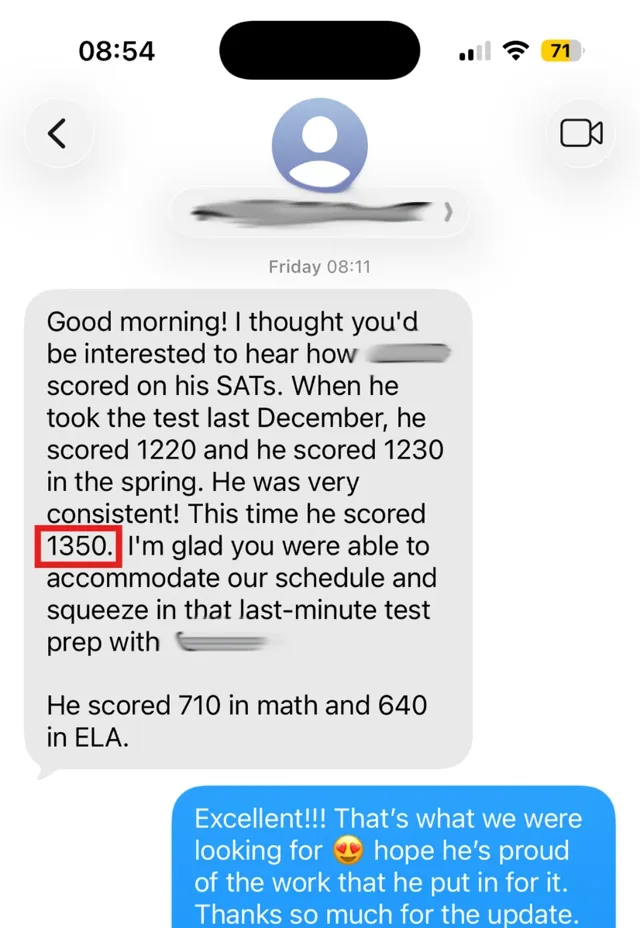

One-on-one digital SAT tutoring · Cranford, NJ and online
SAT prep built on your student’s own data: a free full-length diagnostic, a plan drawn from how every question was answered, and a full course and portal between sessions.
Try it · a real report, for a made-up student
Every diagnostic and practice test records how each question was answered, not just whether it was right: how long it took, whether the answer changed at review, whether it came faster than the question can be read. The report turns that into where the points went and what to do next. Use the arrows, or tap the + on any screen.
The portal
The tests, the question bank, the course and every report live in one login, and every answer your student gives in it feeds the next report. Try it: each view on the right works.
Likely level now: 1320–1440
(4 chances in 5)
Good morning Dana,
Here’s a quick update on Maya’s week. Maya took SAT Practice Test 3 on Wednesday and scored a 1290. The last practice test was a 1240. A single test can swing on its own, so I look at the trend over several tests rather than any one jump or dip.
Our next session is Tuesday at 4:00 PM. The SAT is about 11 weeks away.
A dozen full-length tests. Every one scored, with the full report. Tap a test.
4,523 questions by skill and difficulty, every one with a written explanation. Switch subjects and difficulty.
Every score on one chart. The likely level pools every test, so one good or bad morning never moves the picture on its own.
An update after every session. What your student worked on, how the practice went, any new score, and what comes next. A sample, with made-up names.
The course
The test returns to the same core concepts again and again. So instead of skimming a long list of topics, the course takes each one the SAT tests most and develops it fully, until every version of it looks familiar. Linear equations alone gets four lessons.
Every lesson is a video, a set of notes and a check at the end, built around real SAT questions.
A line in the xy-plane has a slope of 3 and passes through the point (2, 7). What is the y-coordinate of the line’s y-intercept?
Subtracted in the wrong order. 3(2) − 7 = −1. The intercept is 7 − 3(2).
Correct. Put the point into y = 3x + b: 7 = 3(2) + b, so b = 1.
Used the point’s y-value. 7 is the line’s height at x = 2. The y-intercept is its height at x = 0.
Went the wrong way. Moving from x = 2 back to x = 0 lowers y by 3 × 2 = 6, so 7 − 6, not 7 + 6.
Inside every lesson
Try the question. Whatever you pick, you’ll see where each wrong choice comes from. That is how the whole course is taught.
Support
Open times sit right next to the sessions already on my calendar.
Stuck on a question between sessions? Bring it, and we work through it together.
Questions don’t wait for the next session.
A clear checklist each week, right where your student practices.
Registration dates, a setup checklist the week of the test, and a note the day scores come out.

Your tutor
I studied statistics at Northwestern, graduating top of my class in three years, and I’ve tutored one-on-one since 2018. The reports, the plans and the portal come from years of analyzing how the SAT is built: which questions carry the most points, and where students lose them.
Results this fall
Hear from parents who worked with Luca on their SAT preparation, from the scores they achieved to what helped them along the way.



I reply personally, the same day. Every plan starts with a full-length timed test at no charge, and a report on the data behind the score. Rather talk first? Choose a call.
Next open SAT November 7, register by October 23. All dates →
Prefer to talk now?(201) 275-2791